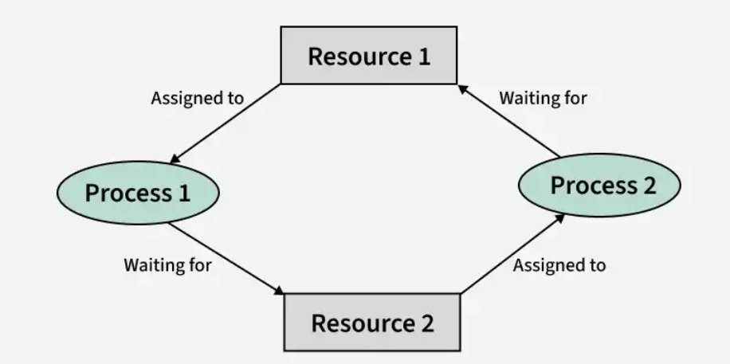
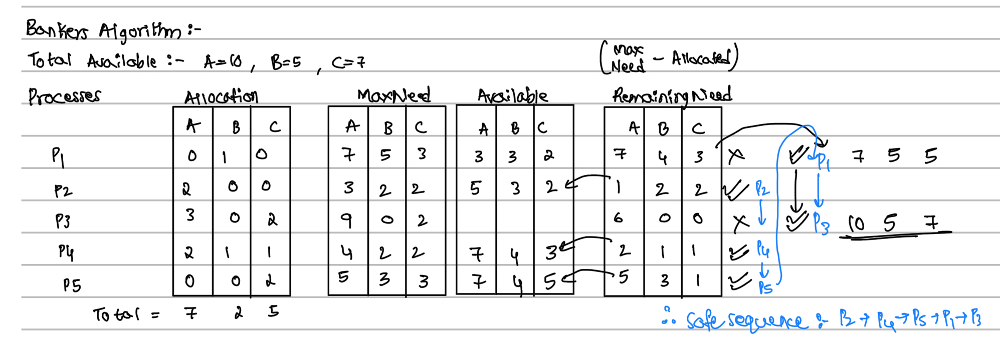

Overview
Job scheduling involves managing the execution of multiple processes or tasks efficiently on a system’s resources such as CPU time and memory. The primary goals are to optimize resource utilization, minimize latency, and ensure fairness.
Khan's Algorithm
Topological Sort using Kahn's Algorithm processes a Directed Acyclic Graph (DAG) by repeatedly removing nodes with zero in-degree. It uses a queue to track these nodes and appends them to the result list. For every removed node, it reduces the in-degree of its neighbors. If the result list doesn't include all nodes, a cycle exists in the graph. In the Android system it can be used for scheduling those processes first which are not dependent on the other process for their execution. This algorithm also helps in the determining whether the process can be abe to complete its task or not as by calculating the indegree of that process.
The best example for that is the Androids Quick Share Android handles dependencies through feature flags and service checks:
- BluetoothManager: Checks and enables Bluetooth.
- LocationManager: Determines if location services are on.
- PackageManager: Verifies whether required permissions (like ACCESS_FINE_LOCATION, BLUETOOTH, NEARBY_SHARE) are granted.
- Developers must manually check and orchestrate these conditions in the correct order.
Use-case:
- Startup task scheduling: Features like ActivityManager, PackageManager, and SystemUI must initialize in a strict dependency order.
- Service boot sequencing: Android schedules background services like BluetoothService, LocationManager, and Telephony based on dependency resolution.
- JobScheduler framework: When jobs have interdependencies (Job A must finish before Job B), a topological sort helps determine execution order.
DeadLocks and its Handling:

- A deadlock is a situation where a set of processes is blocked because each process is holding a resource and waiting for another resource acquired by some other process. In this article, we will discuss deadlock, its necessary conditions, etc. in detail. The Mutual Exclusion, Hold and Wait, No Preemption, Circular Wait any one of them in the operating system can cause the deadlock.
Deadlock Detection using Resource Allocation Graph:
.jpg)
In the above image shown the left has no deadlocks in its processes and resource allocation but the right one does have an deadlock in its resource allocation processes.
Deadlock Detection and Avoidance using Banker's Algorithm:

Code: Bankers AlgorithmReferences:
- https://www.geeksforgeeks.org/topological-sorting-indegree-based-solution/
- https://yuminlee2.medium.com/topological-sort-cf9f8e43af6a
- https://see-algorithms.com/graph/TopSort